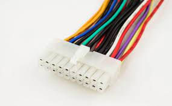

Un cable de alimentacion es un cable eléctrico que sirve para
conectar los electrodomésticos o cualquier otro tipo de dispositivo
eléctrico a la red de suministro a través de un enchufe o conectándose
a un alargador eléctrico. Se caracteriza porque forma una conexión temporal,
fácil de desconectar y volver a reconectar en cualquier otro punto de red.